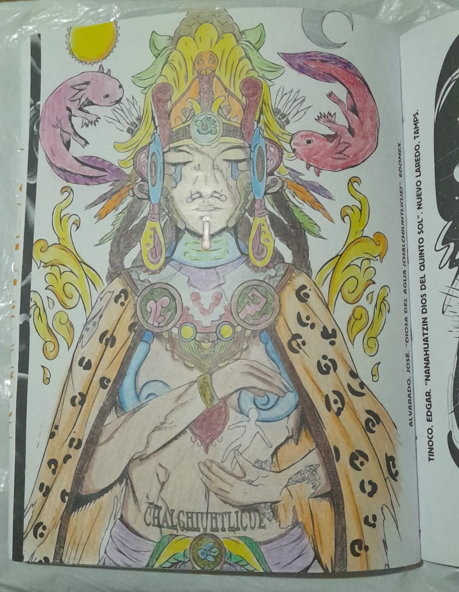
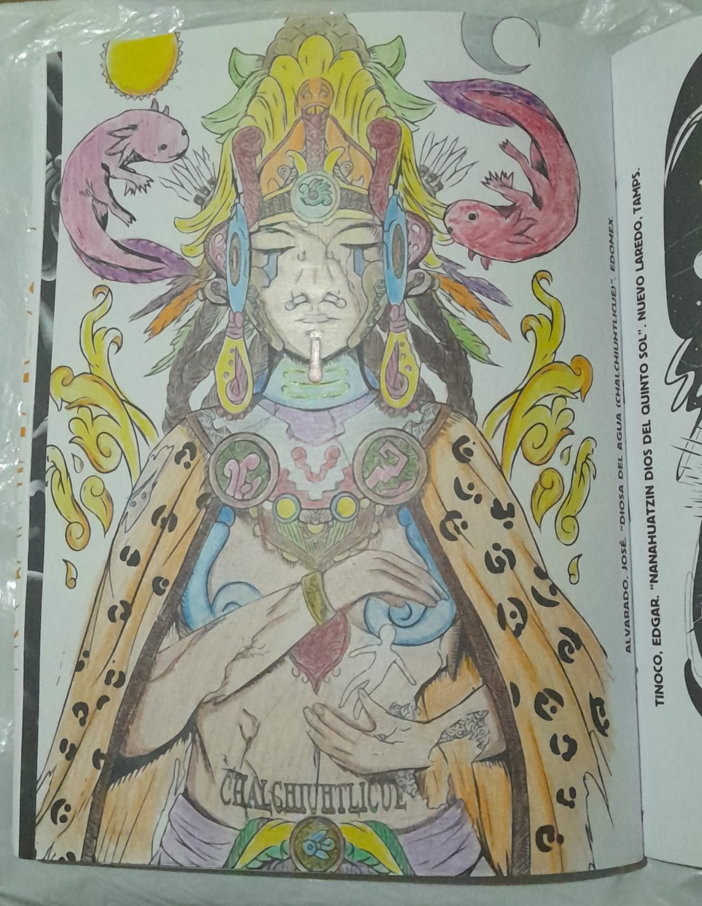

Trabajos en colaboración y comisiones
La ilustración me ha dado la oportunidad de colaborar en proyectos artísticos, académicos y comerciales.
PUNTADA LENTA
Es un proyecto mexicano de arte colaborativo llevado a cabo en 2024 que hace una crítica al consumismo y producción insostenible de la ropa, el proyecto consta de una performance que parodia una pasarela en la que se usan prendas confeccionadas a partir de prendas reutilizadas, durante el performance se muestran carteles con mensajes que invitan a la reflexión, todo esto ambientado con una banda sonora compuesta por sonidos industriales y música en tendencia. En este proyecto realice los bocetos de las prendas y la confección de un conjunto.
Visita el sitio web de puntada lenta en: Puntada Lenta
Artistas y proyectos musicales
La ilustración me ha dado la oportunidad de trabajar para diferentes proyectos musicales, principalmente en la creación de portadas y logotipos.
Visita Garrita de Oso: Garrita de Oso
Hinkarink
Hinkarink Mitoteca vol. 1 (2024) es un libro para colorear inspirado en la mitología prehispánica, el libro esta conformado por ilustraciones de tatuadores mexicanos, en esta primera edición participe con una ilustración digital que representa mi visión de Chalchiuhtlicue, la diosa del agua. Este proyecto es un esfuerzo de la empresa especializada en el tatuaje Hinkarink por conservar las leyendas y mitos prehispánicos.
 
